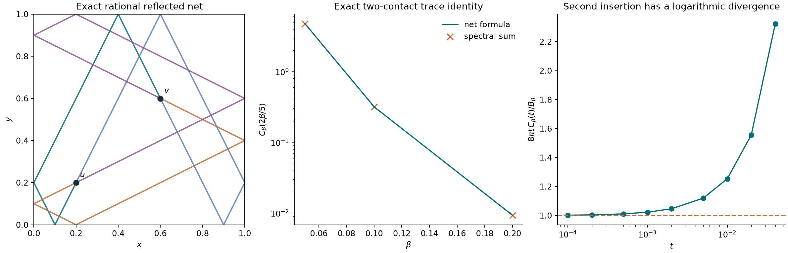

Finite Euclidean regions · actual reflected nets
An exact net identity
inside a bounded rectangle
The intended direction is to recover many-body spectral information from computable geodesic nets. Here the base is a planar rectangle with Dirichlet walls. A discrete net formula evaluates separated contact-insertion traces exactly, with every spatial vertex integral already performed.
Status: this is an exact diagram-level trace identity and a tested algebraic planar net. It is not yet an exact formula for the full interacting many-body spectrum. Contact renormalization, time integration, and the interaction-order sum remain to be controlled.
01 / A bounded planar test
Two contact insertions in a real box
Let \(Q=(0,L_x)\times(0,L_y)\subset\mathbb R^2\), with the Dirichlet Laplacian \(h=-\Delta_Q\). For two spinless bosons let \(H_0=h_1+h_2\). The candidate interaction is a pair contact, formally \(2gD\), where \(D=\delta^{(2)}(x_1-x_2)\). This choice creates shared spatial vertices. It is a model choice for testing the proposed connection, not an assumption that all interactions have the same nets.
The first precise target is the separated-insertion trace, for \(0<t<\beta\):
The integral on the right defines the observable without assuming a bare planar delta Hamiltonian exists. It is finite at positive separated times. Bosonic projection introduces no additional factor here: both particles coincide at each insertion, so direct and exchange endpoints give the same kernel. The four propagators are four reflected paths connecting the two contact vertices.
This is a genuinely planar two-body contact: formally \(D=\delta(x_1-x_2)\delta(y_1-y_2)\), not a sum of independent one-dimensional interactions. The free rectangle kernel separates by coordinate, allowing an exact evaluation of the planar net integral.
02 / The exact connection obtained
A discrete net sum with explicit weights
For one interval of length \(L\), let \(\Gamma\) be a finite multigraph with \(v\) vertices, \(e\) edges, and even degree at every vertex. Loops count twice toward degree. Give each edge a positive duration \(\tau_a\). Define
Pair-contact diagrams have degree four at each interaction vertex. For each sign assignment \(s\in\{\pm1\}^e\), form the signed incidence matrix \(B_s\), whose edge row is \(\mathbf e_{a^-}^{\mathsf T}-s_a\mathbf e_{a^+}^{\mathsf T}\). Choose an integer basis \(Z_s\) for the full lattice \(\ker B_s^{\mathsf T}\cap\mathbb Z^e\). Let \(r_s\) be its rank and set
Empty matrices use determinant one and a single zero-dimensional lattice term. For the planar rectangle, with the same graph and edge durations in both coordinates,
The two-contact trace uses two vertices and four parallel edges with \(\tau=(t,t,\beta-t,\beta-t)\). In this case the prefactor for one coordinate is \(1/(16L^2)\), and \(r_s\) is either two or three. There are only finitely many sign sectors and an absolutely convergent Gaussian sum in each sector.
This is an explicit discrete geometric formula. The labels \((s,w)\), together with the durations, specify reflected stationary-net sectors. Amplitudes and signs are essential; the formula is not a list of unweighted lengths. Rank-deficient incidence matrices correspond to continuous families, not isolated nets. Different labels can represent symmetries or multiplicities of the same physical net.
Why the exponent is a net action
Choose an integer image vector \(m\) with \(Z_s^{\mathsf T}m=w\). Such a representative exists because the integer kernel lattice is primitive. The lifted edge displacements are \(B_sx+2Lm\), and their quadratic heat action is
Its stationary value is exactly
Folding the lifted edges gives reflected straight segments in the interval, or in the planar rectangle after combining coordinates. The stationarity equations are momentum balance at vertices, with endpoint momentum proportional to displacement divided by duration. For rational durations and rational or algebraic side lengths, the linear equations give rational or algebraic vertex coordinates and algebraic segment lengths.
Ordinary equal-tension geodesic nets require the additional unit-tangent balance condition. Generic fixed-duration terms are weighted stationary nets; the explicit example below satisfies ordinary unit-tangent balance as well.
03 / Why this is an identity
Projection, integer flows, Poisson summation
Proof of the discrete net formula
Let \(p_\tau\) be the periodic heat kernel on the circle of circumference \(2L\). The interval Dirichlet kernel is exactly
The Dirichlet kernel is odd under reflection of either endpoint. Because every vertex has even degree, the full graph integrand is even in each vertex coordinate. The integral over the interval can therefore be replaced by \(2^{-v}\) times the integral over the doubled torus.
Expand the difference on every edge. The sign of a sector is \(\prod_a s_a\). Integrating its Fourier modes over all torus vertices imposes the exact integer-flow constraints \(B_s^{\mathsf T}n=0\). The normalization is \(2^{-v}(2L)^{v-e}=2^{-e}L^{v-e}\). Every allowed flow is uniquely \(n=Z_sk\), giving
Apply multidimensional Gaussian Poisson summation to each sector. Since all durations are positive, \(G_s\) is positive definite and both lattice sums converge absolutely. This gives the boxed formula. Separation of the rectangular heat kernel proves the planar product formula.
For the action interpretation, stationarity gives \(B_s^{\mathsf T}T^{-1}(B_sx+2Lm)=0\). Thus \(B_sx+2Lm=TZ_s\alpha\). Multiplying by \(Z_s^{\mathsf T}\) gives \(G_s\alpha=2Lw\). Substituting into the quadratic action gives the stated stationary value. Flat directions are integrated by the torus normalization; no nondegenerate stationary-phase assumption is used.
The Gaussian structure is what makes the spatial reduction exact in these reflection domains. Replacing kernels by their short-time geodesic approximations in an arbitrary domain would not inherit this proof.
Certified lattice truncation, apart from arithmetic roundoff
The script truncates each winding coordinate to \(|w_i|\leq W\). Put \(a=L^2/\operatorname{tr}G_s\). A union bound outside the cube gives
Use \(\lambda_{\max}(G_s)\leq\operatorname{tr}G_s\), a geometric majorant for the one-coordinate tail, and \(\sum_{n\in\mathbb Z}e^{-an^2}\leq1+\sqrt{\pi/a}\). Summing absolute sector bounds controls the signed net sum. This is a truncation estimate; it does not bound floating-point cancellation.
04 / An actual algebraic planar net
Two rational vertices, four reflected paths
In the unit square choose the contact vertices
With image endpoints \(s_av+2m_a\), use the following words in the two coordinates:
The lifted displacement vectors and path lengths are
The unit tangent vectors cancel in opposite pairs at both vertices. Every wall hit obeys specular reflection, all listed wall-hit coordinates are rational, and none of these four paths hits a corner. The two duration groups have equal speeds, so variation of the contact-time split is stationary too.
For these sign sectors the integer cycle metrics are \(G_x=G_y=\beta I_2\), with dual winding vectors \((-1,-2)\) and \((-2,-1)\). The exact contribution of this labeled sector to the two-contact trace is therefore
This is a sector/family contribution after the reflection regrouping used in the theorem, not the integral of a single image word restricted to the square. Other signs, images, and multiplicities remain in the complete trace. Its expression is independent of the time split; integrating this one sector in the formal second-order coefficient gives \(e^{-10/\beta}/(128\pi^2)\).
Proof of the four-vector constraint
If one pair of unit vectors sums to zero, the other pair does too. Otherwise their nonzero sum fixes the midpoint of the chord joining them on the unit circle. The remaining pair has the opposite midpoint, and the corresponding chord has the opposite endpoints. Hence the four vectors occur in opposite pairs.
05 / What was actually computed
Three independent evaluations of the planar trace

The spectral calculation uses Dirichlet sine eigenfunctions and exact four-sine overlaps. It uses neither Poisson summation nor vertex quadrature. A third calculation integrates the explicit image kernels using Gauss–Legendre quadrature. All three agree to their respective numerical precision.
| Inverse temperature | Net trace | Spectral trace | Absolute difference |
|---|
The net sum uses \(W=6\); the spectral sum retains interval modes through \(40\); the independent image-integral check uses quadrature orders \(160\) and \(240\). Analytic winding tails are recorded separately from observed floating-point errors.
An additional grid of nine inverse-temperature and time-split combinations is recorded in the JSON. Its largest net-versus-spectral absolute discrepancy is below \(8.6\times10^{-14}\); the three displayed cases are a representative subset.
Check against finite two-body Hamiltonians
As a separate check, assemble the contact interaction in the normalized two-boson sine basis, retaining modes \(1\leq n_x,n_y\leq M\) per particle. These are finite regulator matrices, not an asserted continuum bare-contact Hamiltonian. At \(\beta=0.1\), their two-contact traces converge toward the geometric result:
| Mode cutoff | Two-body dimension | Matrix insertion trace | Difference from net sum |
|---|
A symmetric finite difference of the actual finite-matrix heat trace at \(g=\pm10^{-4}\) also checks the first contact coefficient. The largest observed derivative discrepancy is below \(10^{-10}\); its Fourier truncation error is a separate quantity in the results file.
06 / What separates this from the full spectrum
Short contact loops must be renormalized
For the formal expansion \(Z(g)=Z_0+g a_1+g^2a_2+\cdots\), with interaction \(2gD\), write \(B_\beta=\int_QK_\beta(x,x)^2dx\). The first coefficient has an exact geometric formula:
The identity for \(I_L\) follows from \(\int\phi_n^2\phi_m^2=L^{-1}(1+\delta_{nm}/2)\). Alternatively the general graph theorem applies to a single vertex with two loops. The first coefficient is finite as a separated regularization limit; this alone does not define the interacting operator.
Proof
Near an interior point, the short-time planar kernel is \((4\pi t)^{-1}e^{-|u-v|^2/(4t)}\). Its square integrates in the relative coordinate to \((8\pi t)^{-1}\). The other two propagators converge to \(K_\beta(u,u)^2\). Dirichlet heat-kernel bounds and the vanishing of \(K_\beta(u,u)\) at the walls control the boundary region, giving the stated limit and an integrable remainder after subtracting the leading term. Cyclicity of the trace and \(C_\beta(t)=C_\beta(\beta-t)\) give \(a_2=2\beta\int C_\beta\), and the two endpoint logarithms give its coefficient.
The scaled numerical ratio \(8\pi t C_\beta(t)/B_\beta\) approaches one; at \(t=10^{-4}\), \(\beta=0.1\), it is approximately \(1.00227\). This is the contact model's actual ultraviolet issue, not a hypothetical warning. It explains why extending the one-dimensional bare-contact argument would be invalid.
A second-order subtraction can cancel this logarithm. Formally choosing
makes the divergent part of \(g_{\rm bare}a_1+g_{\rm bare}^2a_2\) cancel; \(\beta_*\) is a fixed reference scale. This algebraic cancellation is not a proof of a self-adjoint renormalized operator or convergence of the full series. A physical contact scale and a nonperturbative construction must be specified. Existing treatments of renormalized planar many-body contact interactions and renormalized contact path integrals provide relevant starting points; no novelty claim is made for contact renormalization itself.
07 / Open questions, not conjectures
Collect evidence before selecting a node law
The current target is a mathematical model that is free between geometric nodes in Euclidean or hyperbolic domains. The rectangle identity proves a separated contact-insertion formula, and the previous displayed crossing net does not distinguish an interaction from free path intersections.
The evidence audit proves the free many-particle trace baseline and reports an explicitly coupled smooth-kernel control. Neither supplies a potential-free three-valent node rule. The remaining task is to identify a precise Laplacian or higher trace functional, then test its relation to ordinary geodesic nets. No general correspondence is conjectured on the present evidence.
08 / Reproduce and audit
Source, exact coordinates, and every numerical comparison
python3 -m pip install -r research-requirements.txt python3 scripts/planar_net_trace.py
Use Python 3.12 or newer. Source code · Complete JSON including rational path coordinates · Vector figure · Archived circle calculations

The search records ordered reflection-word candidates, not a classification of geometrically distinct nets. No numerical observation is promoted to a continuum interacting spectral theorem.